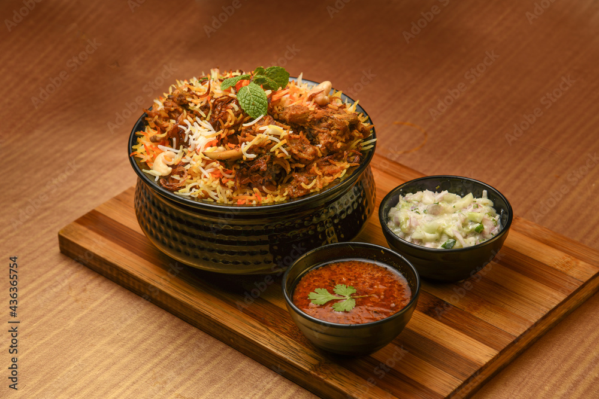

My three favourite food

- A burger is a juicy, flavorful delight: soft bun embracing seasoned patty, crisp lettuce, ripe tomato, melted cheese, tangy sauces, and crunchy pickles, creating a satisfying bite every time.

- Pizza is a beloved dish that originated in Italy but has become a global favorite. At its core, it’s a flatbread topped with ingredients, baked to perfe0ction.

- Biryani is a fragrant, spiced rice dish layered with marinated meat or vegetables, slow-cooked to perfection, blending basmati rice, saffron, and aromatic herbs into a rich, flavorful feast.